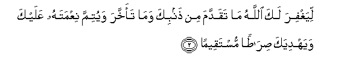
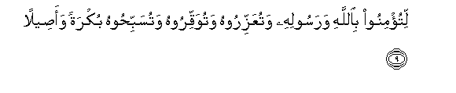

Sacred Texts Islam Index
Hypertext Qur'an Unicode Palmer Pickthall Yusuf Ali English Rodwell
Sūra XLVIII.: Fat-ḥ or Victory. Index
Previous Next

The Holy Quran, tr. by Yusuf Ali, [1934], at sacred-texts.com
Sūra XLVIII.: Fat-ḥ or Victory.
Section 1
1. Inna fatahna laka fathan mubeenan
1. Verily We have granted
Thee a manifest Victory:

2. Liyaghfira laka Allahu ma taqaddama min thanbika wama taakhkhara wayutimma niAAmatahu AAalayka wayahdiyaka siratan mustaqeeman
2. That God may forgive thee
Thy faults of the past
And those to follow;
Fulfil His favour to thee;
And guide thee
On the Straight Way;
3. Wayansuraka Allahu nasran AAazeezan
3. And that God may help
Thee with powerful help.
4. Huwa allathee anzala alssakeenata fee quloobi almu/mineena liyazdadoo eemanan maAAa eemanihim walillahi junoodu alssamawati waal-ardi wakana Allahu AAaleeman hakeeman
4. It is He Who sent
Down Tranquillity
Into the hearts of
The Believers, that they may
Add Faith to their Faith;—
For to God belong
The Forces of the heavens
And the earth; and God is
Full of Knowledge and Wisdom;—
5. Liyudkhila almu/mineena waalmu/minati jannatin tajree min tahtiha al-anharu khalideena feeha wayukaffira AAanhum sayyi-atihim wakana thalika AAinda Allahi fawzan AAatheeman
5. That He may admit
The men and women
Who believe, to Gardens
Beneath which rivers flow,
To dwell therein for aye,
And remove their ills
From them;—and that is,
In the sight of God,
The highest achievement
(For man),—
6. WayuAAaththiba almunafiqeena waalmunafiqati waalmushrikeena waalmushrikati alththanneena biAllahi thanna alssaw-i AAalayhim da-iratu alssaw-i waghadiba Allahu AAalayhim walaAAanahum waaAAadda lahum jahannama wasaat maseeran
6. And that He may punish
The Hypocrites, men and
Women, and the Polytheists,
Men and women, who imagine
An evil opinion of God.
On them is a round
Of Evil: the Wrath of God
Is on them: He has cursed
Them and got Hell ready
For them: and evil
Is it for a destination.
7. Walillahi junoodu alssamawati waal-ardi wakana Allahu AAazeezan hakeeman
7. For to God belong
The Forces of the heavens
And the earth; and God is
Exalted in Power,
Full of Wisdom.
8. Inna arsalnaka shahidan wamubashshiran wanatheeran
8. We have truly sent thee
As a witness, as a
Bringer of Glad Tidings,
And as a Warner:

9. Litu/minoo biAllahi warasoolihi watuAAazziroohu watuwaqqiroohu watusabbihoohu bukratan waaseelan
9. In order that ye
(O men) may believe
In God and His Apostle,
That ye may assist
And honour Him,
And celebrate His praises
Morning and evening.
10. Inna allatheena yubayiAAoonaka innama yubayiAAoona Allaha yadu Allahi fawqa aydeehim faman nakatha fa-innama yankuthu AAala nafsihi waman awfa bima AAahada AAalayhu Allaha fasayu/teehi ajran AAatheeman
10. Verily those who plight
Their fealty to thee
Do no less than plight
Their fealty to God:
The Hand of God is
Over their hands:
Then any one who violates
His oath, does so
To the harm of his own
Soul, and any one who
Fulfils what he has
Covenanted with God,—
God will soon grant him
A great Reward.